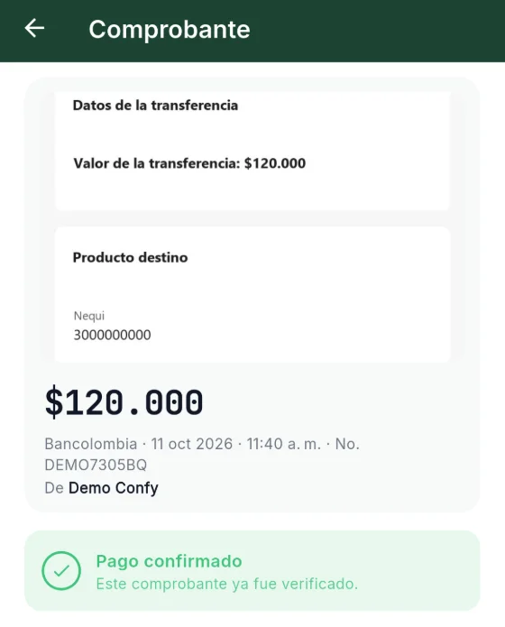
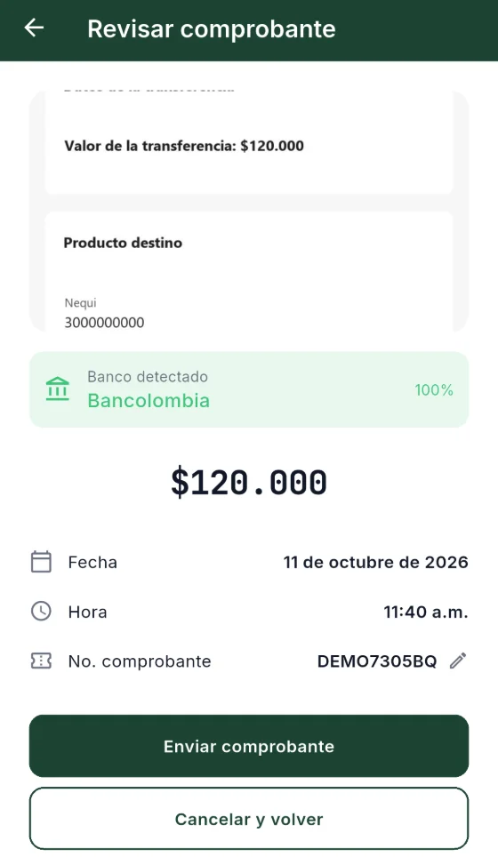
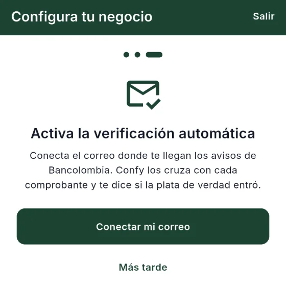
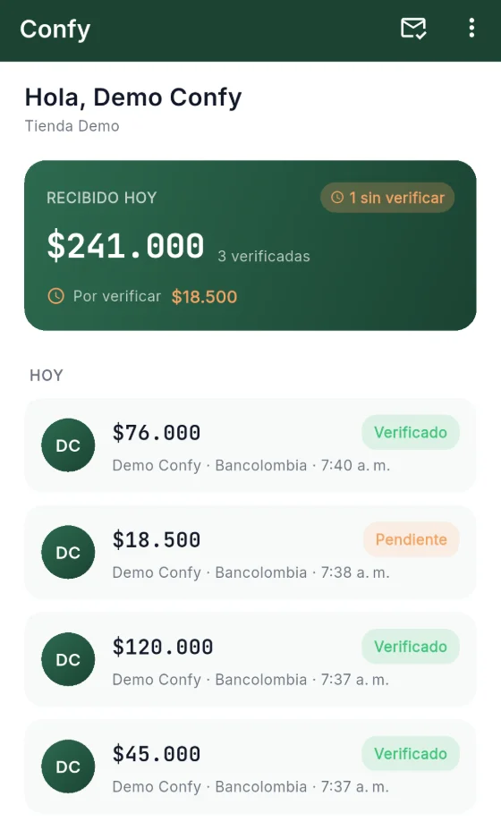

Para negocios que reciben transferencias Bancolombia
Que ningún comprobante falso te engañe otra vez.
Confy cruza cada comprobante con el aviso real de Bancolombia y te dice si es verdad.
- Banco
- Bancolombia
- Fecha
- 11 oct 2026 · 11:40 a. m.
- Subido por
- Demo Confy

El problema
Lo que pasa en el mostrador, resuelto.
¿Será que sí llegó la plata?
Confy revisa si el aviso del banco llegó a tu correo y te muestra el resultado en el comprobante.
Comprobantes editados que parecen reales.
Confy no se fija en cómo se ve la imagen. La compara con el aviso que te mandó el banco.
Abrir la app del banco cada vez que alguien paga.
El estado aparece en Confy. No tienes que entrar al banco para revisar cada pago.
Discutir con el trabajador sobre un pago.
Cada comprobante queda con quién lo subió y su estado.
Cómo funciona
Tres pasos.
-

01El trabajador sube la foto
Toma la foto del comprobante que le muestra el cliente y la sube a Confy.
-

02Confy la cruza con el banco
Busca el aviso de Bancolombia que llegó a tu correo y compara los datos del pago.
-

03Tú ves «Verificado»
Si los datos coinciden, el comprobante aparece como Verificado en tu app.
Lo que Confy no hace
Hace una sola cosa. Sin rodeos.
- Sin abrir la app del banco.
- Sin llamar a preguntar si llegó.
- Sin creerle a una captura.
- Sin pedir la clave de tu banco.
Confianza verificable
No te pedimos que confíes. Puedes revisarlo.
Estas son las páginas donde explicamos qué datos usa Confy y cómo borrarlos.
Lo que pasa con tus datos
- Te conectas con Gmail u Outlook iniciando sesión con Google o Microsoft.
- Las fotos de los comprobantes se borran a los 30 días.
- Los datos del pago (monto, fecha, hora, banco, número y estado) se conservan mientras exista la cuenta y se borran al eliminarla.
- Si el dueño elimina su cuenta, se borra todo. Si la elimina un trabajador, sus comprobantes quedan en el negocio sin su nombre.
Preguntas frecuentes
Lo que más nos preguntan.
¿Con qué bancos funciona?
Por ahora, con transferencias de Bancolombia.
¿Qué correo necesito?
Gmail u Outlook. Te conectas iniciando sesión con tu cuenta de Google o de Microsoft.
¿Confy me pide la clave del banco?
No. Confy no pide la clave de tu banco.
¿Qué pasa con las fotos de los comprobantes?
Se borran a los 30 días. Los datos del pago se conservan mientras exista la cuenta y se borran al eliminarla.
¿Cómo elimino mi cuenta?
En la página Eliminar cuenta explicamos cómo. Si eres el dueño, se borra todo; si eres trabajador, tus comprobantes quedan en el negocio sin tu nombre.
¿Funciona en iPhone?
Por ahora, Confy es solo para Android.